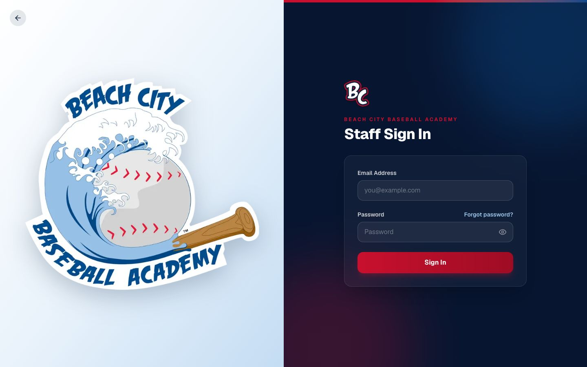
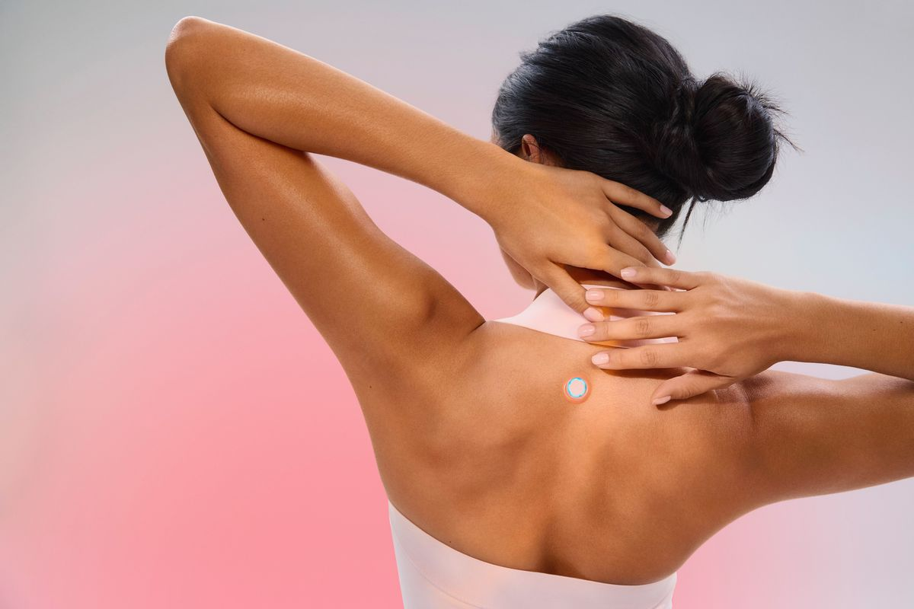
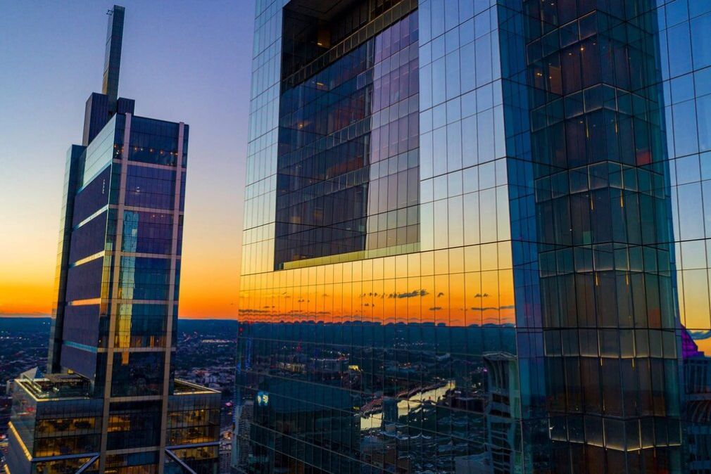
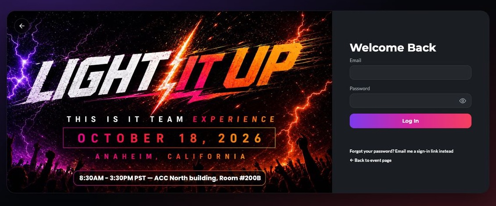
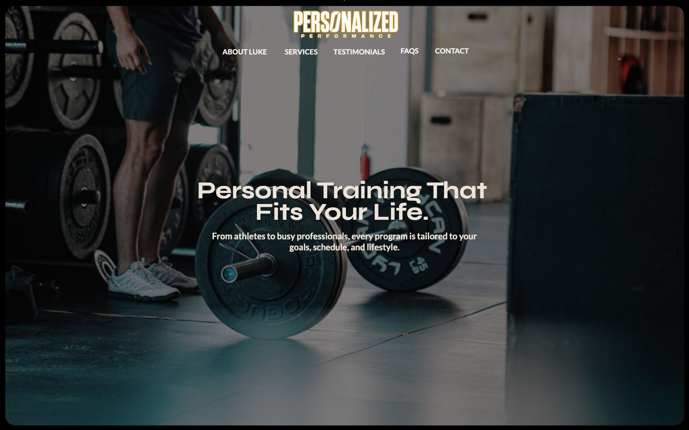
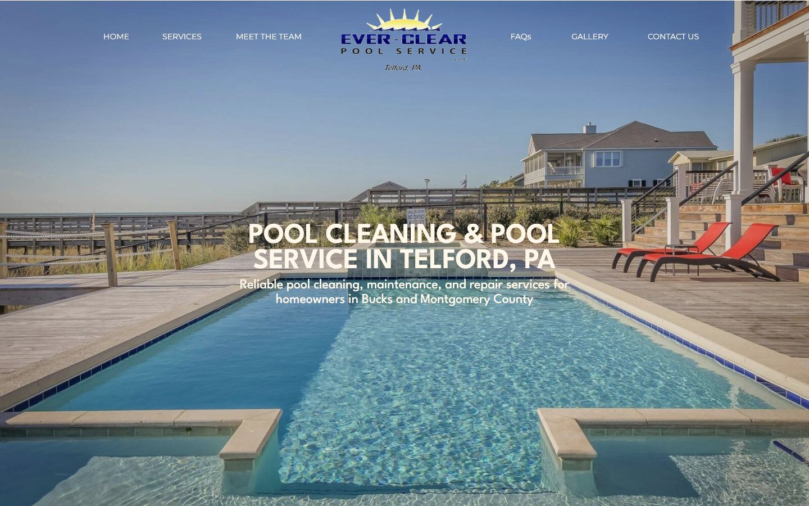

Design & Digital Presence
Sarah
Focuses on website design, branding, SEO, and creating cohesive digital experiences that help businesses communicate their value and attract customers.
Website design · Branding · SEO · Custom business systems
We build thoughtful digital experiences and custom business systems that help businesses grow, connect with customers, and run more efficiently.
As businesses grow, their needs change. Your website may no longer reflect the quality of your work, your online presence may not be attracting the right customers, or your team may be spending too much time managing disconnected tools and manual processes.
We help businesses bridge the gap between where they are and where they want to be through thoughtful design and technology built around their needs.
Your website no longer reflects your brand or the quality of your services.
Sound familiar?
How we help
A redesign that reflects the quality of your work, built mobile-first and easy to keep current.
You're struggling to attract the right customers online.
Sound familiar?
How we help
Search foundations, clear messaging and a consistent brand, so the right customers find you and reach out.
Your business relies on spreadsheets, disconnected platforms, and repetitive manual tasks.
Sound familiar?
How we help
Automated workflows and connected tools that take repetitive work off your team's plate.
Your existing software doesn't quite fit the way your business operates.
Sound familiar?
How we help
Custom tools built around the way you operate, instead of bending your business to fit a generic platform.
Your business has grown, but your digital presence and internal systems haven't kept up.
Sound familiar?
How we help
A digital foundation that scales: a website and systems planned around where your business is headed.
Swipe to see all five →
About us
Sand City Designs brings design and technology together to help businesses build a stronger digital foundation. From how your brand shows up online to the systems that keep your business running behind the scenes, we create solutions designed around your goals.
Together, we combine creative strategy and technical problem-solving to help businesses improve how they show up, serve their customers, and operate every day.
Design & Digital Presence
Focuses on website design, branding, SEO, and creating cohesive digital experiences that help businesses communicate their value and attract customers.
Technology & Business Systems
Focuses on custom software, business operations, and tailored digital tools that simplify workflows and help businesses operate more efficiently.
From how your brand shows up online to the systems that keep your business running behind the scenes.
We create thoughtful, strategic digital experiences that help businesses communicate their value, reflect their brand, and connect with the right audience. From custom website design to branding and SEO, we help build an online presence that supports your business goals.
We build tailored software and digital tools that simplify operations, connect workflows, and help businesses run more efficiently. Instead of forcing your business to adapt to generic platforms, we create solutions around the way you actually work.
Every business has different needs. Explore how we approach design and technology to create digital experiences and systems that solve real problems.

Custom Software & Business SystemsBeach City BaseballView case study →
Website Design & BrandingThis Is It TeamView case study →
Website Design & BrandingMaterial DistributorsView case study →
Custom Software & Business SystemsLight It Up DashboardView case study →
Website Design & BrandingPersonalized PerformanceView case study →
Website Design & BrandingEver-Clear PoolsView case study →Whether you need a stronger online presence or a better way to run your business, we'd love to hear what you're working on. Tell us about your goals, challenges, and ideas, and let's explore how we can help.
Tell Us About Your Project